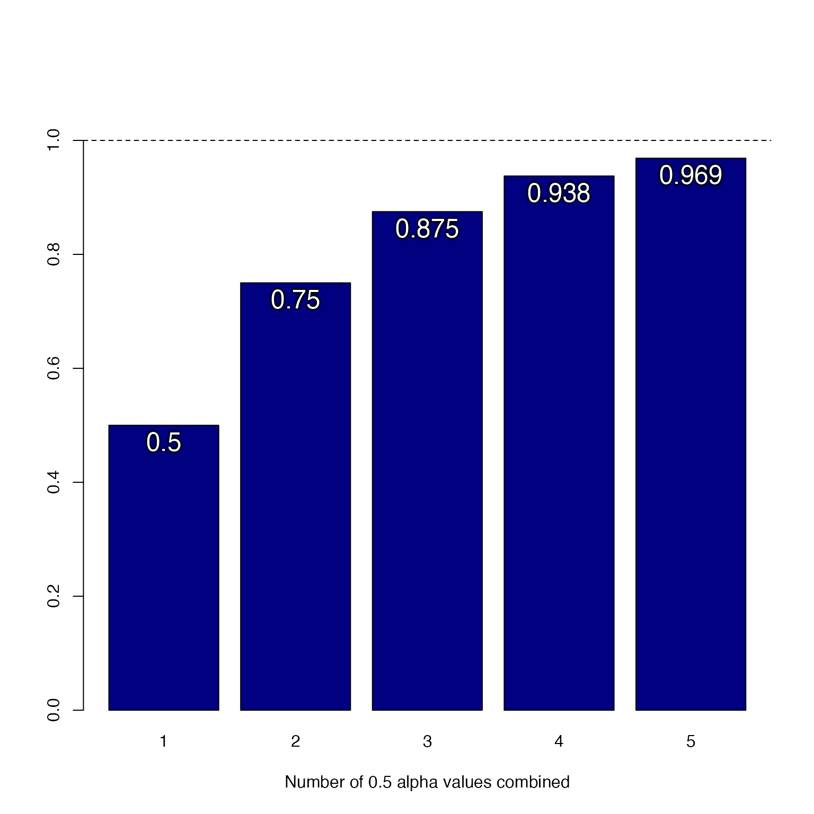

Combine alpha transparency values with additive logic
Source:R/colorjam-blendcolors.R
combine_alphas.RdCombine alpha transparency values with additive logic
Details
Alpha transparency is defined as 0 for fully transparent, and 1
(or max_alpha) for fully opaque (not transparent).
The purpose is to permit combining multiple colors, where the
alpha transparency builds over time. Each color should contribute
some proportional fraction to the overall opacity of the final
color.
The basic formula:
new_alpha <- alpha1 + (1 - alpha1) * alpha2
Or when max_alpha is defined:
new_alpha <- alpha1 + (max_alpha - alpha1) * alpha2
Any
NAvalues are considered equivalent to0and are therefore not applied.All input alpha values are restricted to values between
0andmax_alpha.For more than two values, each value is applied in series, which works out to the same result if applied in any order.
See also
Other colorjam display:
color_pie(),
showDichromat()
Examples
# it progressively fills 50% of remaining transparency
combine_alphas(c(0.5, 0.5))
#> [1] 0.75
combine_alphas(c(0.5, 0.5, 0.5))
#> [1] 0.875
combine_alphas(c(0.5, 0.5, 0.5, 0.5))
#> [1] 0.9375
base_alpha <- 0.5;
new_alphas <- sapply(1:5, function(i){
combine_alphas(rep(base_alpha, i))
})
names(new_alphas) <- seq_along(new_alphas);
bp <- barplot(new_alphas, ylim=c(0, 1.1), col="navy",
xlab=paste0("Number of ",
base_alpha,
" alpha values combined"))
abline(h=1, lty=2);
jamba::shadowText(x=bp[, 1], y=new_alphas,
col="white", cex=1.5,
pos=1,
xpd=TRUE,
label=round(new_alphas, digits=3))
